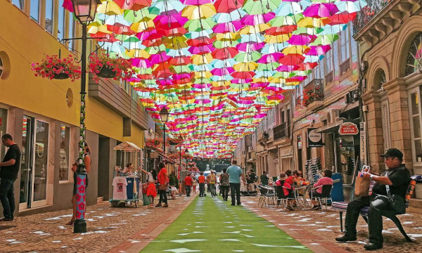
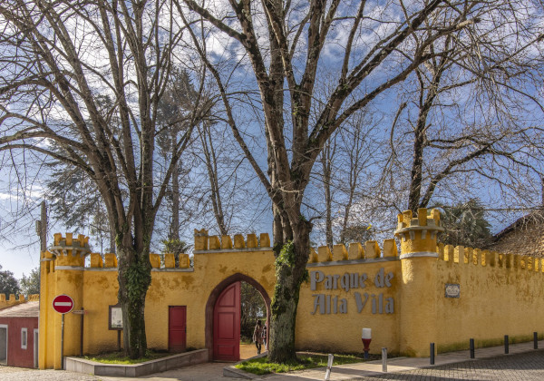

Histoire et Patrimoine
Águeda est une ville située dans la région du Centre du Portugal, avec une histoire riche remontant à l'époque romaine. Son patrimoine historique comprend des vestiges de châteaux médiévaux, des églises anciennes et des maisons traditionnelles. Le château d'Águeda, datant du XIIe siècle, offre une vue panoramique sur la ville et les environs, tandis que l'église de Santa Eulália est un exemple remarquable d'architecture baroque.
Culture et Arts
Águeda est un centre culturel dynamique, avec une scène artistique florissante qui comprend des galeries d'art, des festivals et des événements culturels tout au long de l'année. Le festival AgitAgueda, qui se tient chaque été, est célèbre pour ses installations artistiques colorées qui transforment les rues de la ville en véritables œuvres d'art. Les musées locaux, tels que le musée d'Águeda et le musée Ferreira de Castro, offrent également aux visiteurs l'occasion de découvrir l'histoire et la culture de la région.
Attractions Touristiques
Águeda offre une variété d'attractions touristiques pour les visiteurs, des sites historiques aux espaces naturels préservés. Le parc naturel de la Serra do Caramulo, situé à proximité de la ville, est un paradis pour les amoureux de la nature, avec des sentiers de randonnée pittoresques, des cascades et une faune diversifiée. Les visiteurs peuvent également explorer le centre-ville d'Águeda, avec ses places charmantes, ses boutiques locales et ses cafés animés. A Noël vous pourrez profitez d'un environnement magique: les rues sont décorés, les parcs, mais aussi du plus grand père-Noël au monde celon le Guinness Book
Cuisine et Gastronomie
La cuisine d'Águeda met en valeur les saveurs authentiques de la région, avec des plats traditionnels préparés avec des ingrédients locaux frais. Les spécialités culinaires incluent le "leitão à Bairrada", du porcelet rôti à la broche, et les "chanfanas", un ragoût de viande de chèvre mariné dans du vin rouge et des épices; les "pasteis de Agueda". Les restaurants locaux proposent également une variété de plats à base de poissons et de fruits de mer frais, ainsi que des vins régionaux de qualité.
Loisirs et Divertissements
Águeda offre une gamme d'options de loisirs et de divertissements pour les visiteurs de tous âges. Les amateurs de plein air peuvent profiter des sentiers de randonnée, des pistes cyclables et des activités nautiques disponibles dans les environs de la ville, comme dans le parc de Alta Vila. Le parc aquatique d'Águeda est idéal pour se rafraîchir pendant les mois d'été, tandis que les parcs et jardins de la ville offrent des espaces verts paisibles pour se détendre et se ressourcer. Les événements culturels et les festivals locaux, tels que le festival AgitAgueda et la fête de Santa Eufémia, sont également des occasions populaires de célébrer et de s'amuser en famille ou entre amis.
